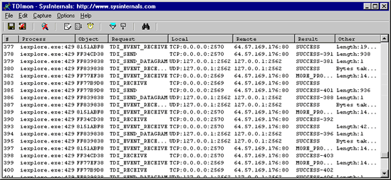

TDIMon is an application that lets you monitor TCP and UDP activity on your local system. It is the most powerful tool available for tracking down network-related configuration problems and analyzing application network usage.
TDIMon gets its name from the fact that it monitors activity at the Transport Driver Interface (TDI) level of networking operations in the operating system kernel. This is the interface to protocol stacks such as TCP and UDP. Thus, the I/O activity shown by TDIMon corresponds to TDI-formatted commands. Most TDI commands have direct correspondence with WinSock (the Windows socket API) functions, and thus are easy to interpret. For documentation on TDI and the commands shown in TDIMon, please see the Windows 2000 DDK, available for free download from Microsoft's web site. TDIMon works on NT 4.0, Windows 2000 (Win2K), Windows XP, Windows 95 and Windows 98.
On Windows NT and Windows 2000, simply execute the TDIMon program file (tdimon.exe) and TDIMon will immediately start capturing TCP/IP activity. To run TDIMon on Windows 95 you must get the WinSock2 update from Microsoft. Note that if you run TDIMon on Windows NT/2000 TDImon.exe must be located on a non-network drive and you must have administrative privilege. On Windows NT and Windows 2000 TDIMon will only show remote addresses for endpoints opened after it has started. However, if you purchase and install TCPView Pro from Winternals Software, the TDIMon driver, which is shared between TCPView Pro and TDIMon, is installed at boot time so that you see all remote addresses.
On Windows 95 and Windows 98 TDIMon must install its driver and requires a reboot to activate. To uninstall the TDIMon driver, use the File|Uninstall menu entry.
As events are printed to the output, they are tagged with a sequence number. If your system generates TCP/IP activity faster than TDIMon is capable of collecting and displaying, gaps in the sequence numbers may result. All TDI operations are asynchronous in nature, and if an operation finishes after other operations are initiated, the sequence number of the completion is shown in the Result column in the form "Status Code-Completion Sequence #". For example, if an operation begins at sequence number 1, and another operation (tagged with sequence 2) initiates and completes before the first operation's completion, the first operation will show "SUCCESS-3" in its Result column.
Menus, hot-keys, or toolbar buttons can be used to clear the window, save the monitored data to a file, search output, and change the window font. Each time you exit TDIMon it remembers the position of the window, the widths of the output columns, the font selection, configured filters, and the time-stamp mode.
Note: Filtering and highlighting are enabled only if you have the full (retail) version of TCPView Pro installed on your system. See below for information on ordering TCPView Pro.
If you want a more user-friendly view of TCP and UDP activity, including automatic DNS name resolution, a static view showing existing endpoints, and more, please see TCPView Pro in Winternals Administrator's Pak.
Here are some other monitoring tools available at Sysinternals:
In order to help us track its use, please download through the link that represents the operating system on which you will use or mostly use TDIMon.
Note that the zip files are identical, and TDIMon runs on either platform.
Download TDImon (95KB) - you plan on using TDImon on Win9x
Download TDImon (95KB) - you plan on using TDImon on WinNT)